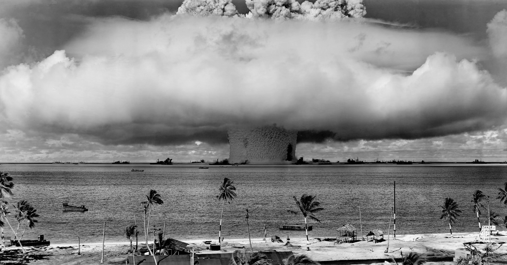
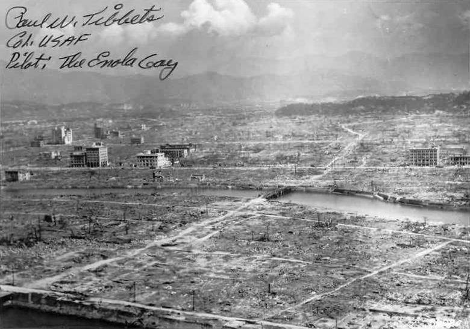
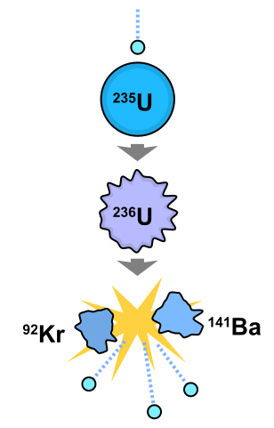
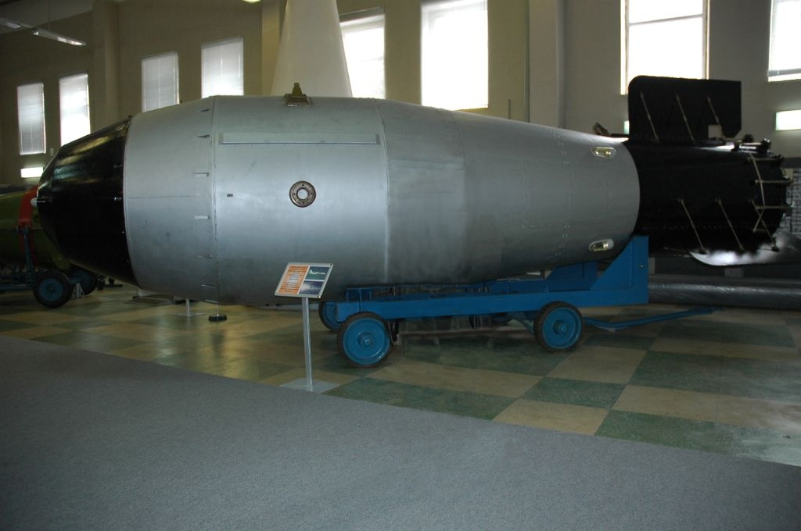
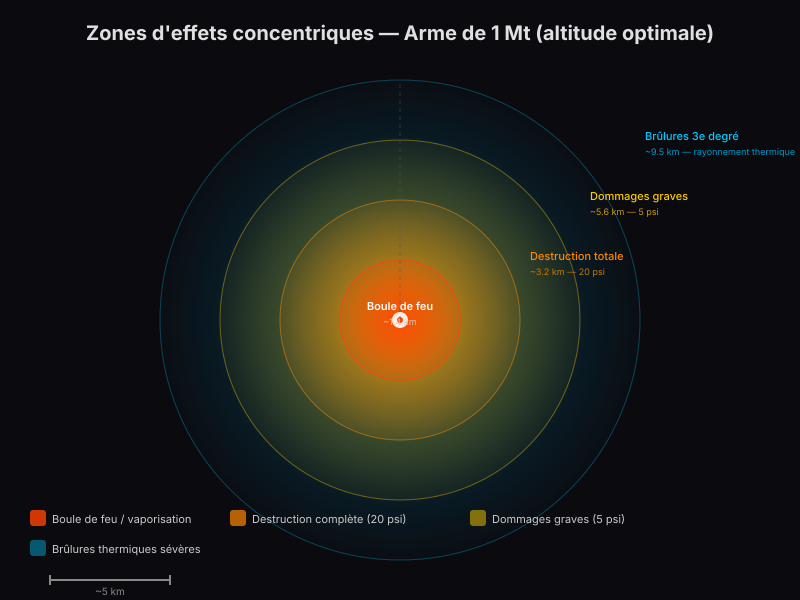
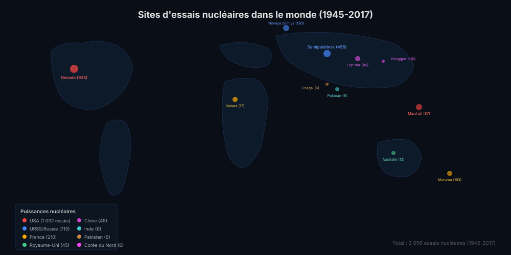
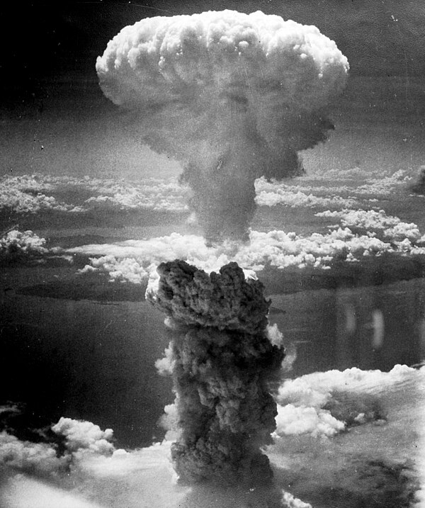

Galerie documentaire
Images historiques, schémas scientifiques et documents d'archives du programme nucléaire mondial.

Essai Trinity
Première explosion nucléaire de l'histoire, 0,025 secondes après la détonation. Désert d'Alamogordo, Nouveau-Mexique. Puissance : 21 kt.

Opération Crossroads — Essai Baker
Explosion sous-marine à l'atoll de Bikini. La colonne d'eau atteint 1 800 mètres de hauteur, soulevant des navires comme des jouets.

Hiroshima après le bombardement
Vue aérienne d'Hiroshima après l'explosion de "Little Boy". La quasi-totalité du centre-ville est rasée sur un rayon de 1,6 km.

Réaction en chaîne
Schéma pédagogique de la réaction en chaîne par fission : chaque noyau fissionné libère des neutrons qui provoquent de nouvelles fissions.

Tsar Bomba
Champignon atomique de la Tsar Bomba (50 Mt), la plus puissante explosion artificielle. Le champignon s'est élevé à 67 km d'altitude.

Zones d'effets concentriques
Infographie montrant les zones de destruction, de brûlures et de retombées radioactives pour une arme de 1 Mt explosant à altitude optimale.

Carte mondiale des essais
Plus de 2 000 essais nucléaires réalisés entre 1945 et 2017 sur une trentaine de sites à travers le monde.

L'équation fondatrice
L'équivalence masse-énergie d'Einstein : le fondement théorique de l'énergie nucléaire. Une quantité infime de matière peut libérer une énergie colossale.

Nagasaki — Fat Man
Le champignon atomique au-dessus de Nagasaki, 9 août 1945. "Fat Man", bombe au plutonium de 21 kt, dévaste la ville et fait plus de 70 000 morts.
J. Robert Oppenheimer
Directeur scientifique du Projet Manhattan. « Je suis devenu la Mort, le destructeur des mondes. » — Citation de la Bhagavad-Gita après l'essai Trinity.